6 Splunk Administration: Parsing and Manipulating Data
1 Splunk Enterprise Administration: Parsing and Manipulating Data
Overview
- Event processing in Splunk Enterprise
- Role of configuration files
props.conftransforms.conf
- Introduction to the course
- Demo: Setting up the test environment
1-1 Event Processing in Splunk Enterprise
Data Pipeline in Splunk Enterprise
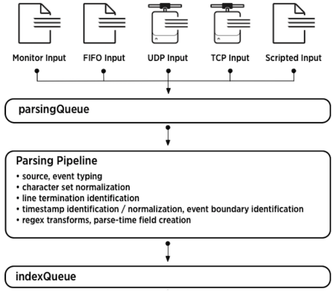
props.conf
- Configuring pre-processing properties
- Attribute/value pairs
- Observe order of precedence
- System local directory – highest
- App local directory
- App default directory
- System default directory – lowest
Restart required
Transforms.conf
- Settings to configure data transformations
- Covers the “how” part of things
- Requires corresponding setting in
props.conf - Unique stanza name
- REGEX
WRITE_METADEST_KEY- FORMAT
Data Input Methods
-
Event Line-breaking
- Identifying and configuring line-breaks
-
Parsing Timestamps
- Recognizing and parsing timestamps
-
Field Extractions
- Custom and default field extractions and overriding
-
Routing and Filtering
- Filtering and sending events to selective and multiple indexers
1-2 Demo: Setting up the Test Environment
- Understand topology of test environment
- Setup test environment
- Configure forwarding and receiving
- Install EventGen and the demo app
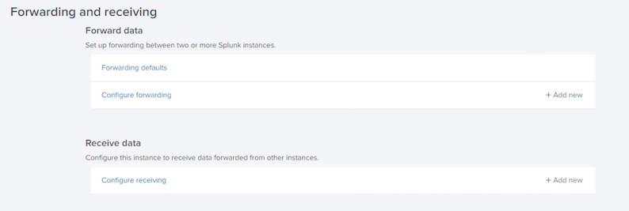
add New Receiving Port
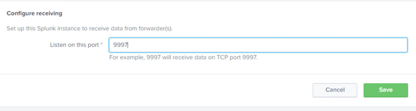
Forward data
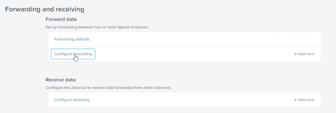
172.17.11.29:9997
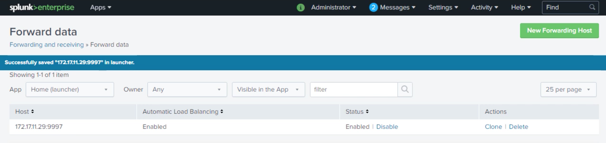
root@splunk_hf:/opt/splunk/etc/system/local# vi outputs.conf
[tcpout]
defaultGroup = default-autolb-group
[tcpout: default-autolb-group]
server = 172.17.11.29:9997
[tcpout-server://172.17.11.29:99971
root@splunk_hf:/opt/splunk/etc/system/local# /opt/splunk/bin/./splunk list forward-server
root@splunk_hf:/opt/splunk/etc/apps/psdemo/default# vi inputs.conf
sourcetype = customers
[
script://./bin/lineBreaking.py]
disabled = 0
interval = 60
index = main
source = linebreaking_script
sourcetype = linebreaking
[script://./bin/lineMerging.py]
disabled = 0
interval = 60
index = main
source = linemerging_script
sourcetype = linemerging
[script://./bin/configureLineBreaker.py]
disabled = 0
interval = 60
index = main
source = configurelinebreaker_script
sourcetype = configlinebreaker
[script://./bin/timestampoverride.py]
disabled = 0
interval = 60
index = main
source = timestamp_override_script
sourcetype = timestamp_override
index=main | stats count by sourcetype
2 Configuring Event Line-breaking
- Event line-breaking
- Demo: Breaking simple events
- Demo: Breaking multiline events
- Demo: Breaking events using line breaker
2-1 Configuring Line-breaks in Splunk Enterprise
Line breaking
SHOULD_LINEMERGE=false- Uses LINE_BREAKER regex that by default is:
([\r\n]+)
Line merging
- Explicitly provide line break setting using attributes like
BREAK_ONLY_BEFOREorMUST_BREAK_AFTERetc SHOULD_LINEMERGE=true
Configuring Multi-line Event Boundaries
- Break and re-assemble data stream
- Add a stanza in
props.conf - Set
SHOULD_LINEMERGE = true - Set the line merging attributes
BREAK_ONLY_BEFOREBREAK_ONLY_BEFORE_DATEMUST_BREAK_AFTERMAX_EVENTS
Breaking Data Stream into Real Events
- More efficient but hard to work with
- Add a stanza in
props.conf - Set
SHOULD_LINEMERGE = false - Set
LINE_BREAKERattribute- Default is
([\r\n]+) - Set to regex matching event boundary
- Restart Splunk
- Default is
2-2 Demo: Configuring Line-breaking Using a Regex
- Configuring simple line breaking
- Based on regex pattern
- Configurations in props.conf
SHOULD_LINEMERGE = trueMUST_BREAK_AFTER = <regex>
- Restart Splunk
root@splunk_hf:/opt/splunk/etc/apps/psdemo# vi default/inputs.conf
[script://./bin/getPerformance.py]
disabled= 0
index = main
source = perfmon_script
sourcetype = performance
[script://./bin/custGen.py]
disabled = 0
interval = 300
index = main
source = custgen_script
sourcetype = customers
[script://./bin/lineBreaking.py]
disabled = 0
interval = 60
index = main
source = linebreaking_script
sourcetype = linebreaking
root@splunk_hf:/opt/splunk/etc/apps/psdemo# vi bin/lineBreaking.py
import random as r
for i in range(1,10) :
print ("This is an event with id" + str(r.randrange(111,999)))+ "\n"
index=main sourcetype=linebreaking
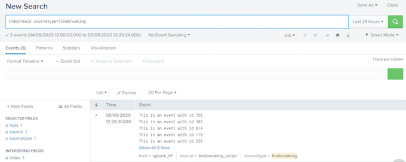
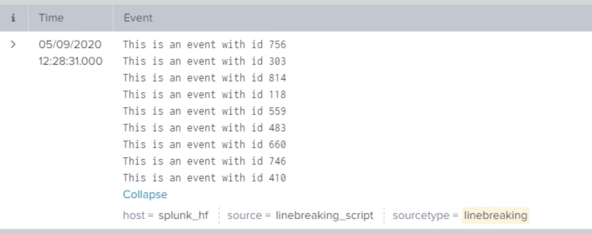
vi bin/lineBreaking.py
vi local/props.conf
SHOULD_LINEMERGE = true
MUST_BREAK_AFTER = \d{3}
root@splunk_hf:/opt/splunk/etc/apps/psdemo#/opt/splunk/bin/splunk restart
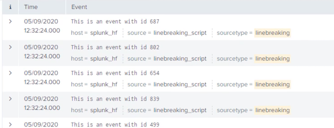
2-3 Demo: Breaking Multi-line Events and Line-merging
- Line breaking in multiline events
BREAK_ONLY_BEFORE_DATE
- Based on regex pattern
- Configurations in props.conf
SHOULD_LINEMERGE = trueBREAK_ONLY_BEFORE= <regex>
- Restart Splunk
root@splunk_hf:/opt/splunk/etc/apps/psdemo# vi default/inputs.conf
[script://./bin/getPerformance.py]
disabled = 0
index = main
source = perfmon_script
sourcetype = performance
[script://./bin/custGen.py]
disabled = 0
interval = 300
index = main
source = custgen_script
sourcetype = customers
[script://./bin/lineBreaking.py]
disabled = 0
interval = 60
index = main
source = linebreaking_script
sourcetype = linebreaking
[script://./bin/lineMerging.py]
disabled = 0
interval = 60
index = main
source = linemerging_script
sourcetype = linemerging
"bin/lineMerging.py"
from datetime import datetime as dt
def getTimestamp():
return dt.now().strftime("%Y-%m-%d %H:%M")
for i in range(1,10):
print ("<soe> The temperature received from the sensors was NORMAL. Temperature recorded at: ")
print (getTimestamp()+" was 38 degrees celcius. This is the end of event")
root@splunk_hf:/opt/splunk/etc/apps/psdemo# /opt/splunk/bin/pythonbin/lineMerging.py
<soe> The temperature received from the sensors was NORMAL. Temperature recorded at:
2020-09-05 13:07 was 38 degrees celcius. This is the end of event
<soe> The temperature received from the sensors was NORMAL. Temperature
<soe> The temperature received from the sensors was NORMAL. Temperature recorded at
2020-09-05 13:07 was 38 degrees celcius. This is the end of event
index=main sourcetype=linemerging
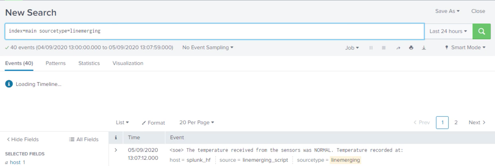
"local/props.conf"
[linebreaking]
SHOULD_LINEMERGE = true
MUST_BREAK_AFTER = \{3}
[linemerging]
SHOULD_LINEMERGE = true
BRFAK_ONLY_BEFORE = \<soe>\
/opt/splunk/bin/splunk restart
index=main sourcetype=linemerging
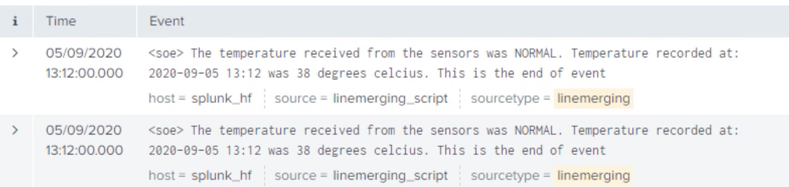
2-4 Demo: Configuring Line-breaking with Line Breaker Attribute
- Configuring simple line breaking
- More efficient method
- Configurations in props.conf
SHOULD_LINEMERGE = falseLINE_BREAKER = <regex>
- Restart Splunk
root@splunk_hf:/opt/splunk/etc/apps/psdemo# vi default/inputs.conf
sourcetype = performance
[script://./bin/custGen.py]
disabled = 0
interval = 300
index = main
source = custgen_script
sourcetype = customers
[script://./bin/lineBreaking.py]
disabled = 0
interval = 60
index = main
source = linebreaking_script
sourcetype = linebreaking
[script://./bin/lineMerging.py]
disabled = 0
interval = 60
index = main
source = linemerging_script
sourcetype = linemerging
[script://./bin/configureLineBreaker.py]
disabled = 0
interval = 60
index = main
source = configurelinebreaker_script
sourcetype = configlinebreaker
root@splunk_hf:/opt/splunk/etc/apps/psdemo# vi default/inputs.conf
"bin/configureLineBreaker.py"
for i in range(1,10) :
print('<This is line number: "+str(i)+" of event>")
index=main sourcetype = configlinebreaker
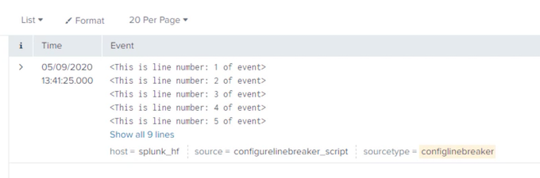
root@splunk_hf:/opt/splunk/etc/apps/psdemo#/opt/splunk/bin/python bin/configureLineBreaker.py
<This is line number: 1 of event>
<This is line number: 2 of event>
<This is line number: 3 of event>
<This is line number: 4 of event>
<This is line number: 5 of event>
<This is line number: 6 of event>
<This is line number: 7 of event>
<This is line number: 8 of event>
<This is line number: 9 of event>
vi local/props.conf
/opt/splunk/bin/splunk restart
index=main sourcetype = configlinebreaker
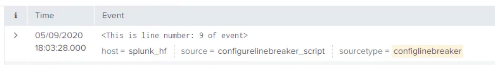
[linebreaking]
SHOULD_LINEMERGE = true
MUST_BREAK_AFTER = \d{3}
[linemerging]
SHOULD_LINEMERGE = true
BREAK_ONLY_BEFORE = \<soe\>
[configlinebreaker]
SHOULD_LINEMERGE = false
LINE_BREAKER = (\>)
/opt/splunk/bin/splunk restart
index=main sourcetype="confielinebreaker"
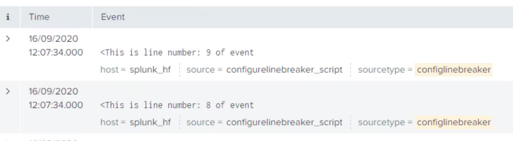
3 Identifying and Parsing Timestamps
- Timestamp properties in Splunk
- Timestamp attributes
- Timestamp formats
- Demo: Time-zone recognition
- Demo: Timestamp attributes in Splunk Web
- Demo: Timestamp overriding
3-1 Configuring Timestamp Recognition in Splunk Enterprise
-
Nothing without a timestamp
- All events must have a timestamp. If not, Splunk assigns one
-
Edit
props.conf- To configure or modify timestamps we edit
props.conf
- To configure or modify timestamps we edit
-
Timestamp recognition
- Splunk recognizes most of the timestamp formats out-of-the box
-
Enhanced strptime() support
- Keep the text to three lines or fewer
-
Timestamp validity attributes
- For accepting or rejecting the timestamp in the events
Editing Timestamp Properties
- Timestamp configurations are done on heavy forwarders or indexers
- Configuration applied to
<sourcetype>, source::<source>orhost::<host> - Identifying correct format of the timestamp is the key
- Select the correct timestamp if multiple timestamps are present
- Account for correct time-zones
Timestamp Attributes
-
DATETIME_CONFIG- Provide a file that contains timestamp formats. NONE to disable & CURRENT for current ts
$SPLUNK_HOME/etc/datetime.xml
-
TIME_PREFIX- Regex pattern found before each timestamp
- Empty string
-
MAX_TIMESTAMP_LOOKAHEAD- Number of characters from start of event
- 128 characters
-
TIME_FORMAT- Unix
strptime()format string - Empty string
- Unix
-
TZ
- Time-zone like UTC or +10:00 for Australia/Brisbane etc
- Empty string
-
MAX_DAYS_AGO- Ignore events older than this value.
MAX_DAYS_AGO=10will ignore events over 10 days old - 2000 days
- Ignore events older than this value.
-
MAX_DAYS_HENCE- Ignore events more than this values in future.
MAX_DAYS_HENCE=3will ignore events over 3 days in future - 2 days
- Ignore events more than this values in future.
Timestamp Format
%d, %m, %YNumber of day, month and year (four digit).%yfor two digits%b, %B: Abbreviated month (Jan, Jun), Full name (January, June)%H, %I, %p, %M, %S: Hour (24 hours) %I (12 hours) with%pas locale’s equivalent of AM or PM. %M minutes and%Sseconds%ZTime zone abbreviations like GMT%z, %:z, %::z: Time zone offset +1000, +10:00 and +10:00:00%sEpoch time (10 digits)%NFor GNU date-time nanoseconds. Sub-seconds %3N, %6N%+For standard Unix date format timestamps
3-2 Demo: Translating Time Zones
Configuring Time-zone
- Sample events in UTC time
- Adding configuration to props.conf
- Converting to local time before indexing
root@splunk_hf:~# cd /opt/splunk/etc/apps/psdemo/
root@splunk_hf:/opt/splunk/etc/apps/psdemo# ll bin
...
utcTimestamp.py
...
vi bin/utcTimestamp.py
from time import strftime, gmtime
for i in range(0,5) :
print(strftime("%Y-%m-%d %H:%M" ,gmtime())+" This event is originally in UTC time with id: " + str(i))
root@splunk_hf:/opt/splunk/etc/apps/psdemo# /opt/splunk/bin/splunk cmd python bin/utcTimestamp.py
2020-09-19 01:50 This event is originally in UTC time with id: 0
2020-09-19 01:50 This event is originally in UTC time with id: 1
2020-09-19 01:50 This event is originally in UTC time with id: 2
2020-09-19 01:50 This event is originally in UTC time with id: 3
2020-09-19 01:50 This event is originally in UTC time with id: 4
root@splunk_hf:/opt/splunk/etc/apps/psdemo# date
Sat Sep 19 11:50:16 AEST 2020
[script://./bin/utcTimestamp.py]
disabled = 0
index = main
source = utcts_script
sourcetype = utc_timestamp
[script://./bin/getPerformance.py]
disabled = 0
index = main
source = perfmon_script
sourcetype = performance
[script://./bin/custGen.py]
disabled = O
interval = 300
index = main
source = custgen_script
sourcetype= customers
[script://./bin/lineBreaking.py]
disabled = 0
interval = 60
index = main
source = linebreaking_script
sourcetype = linebreaking
[script://./bin/lineMerging.py]
disabled =0
interval = 60
index = main
sourcetype = linemerging
index=main sourcetype=utc_timestamp
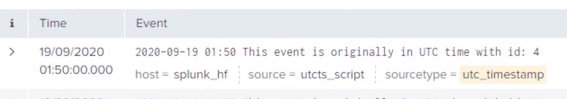
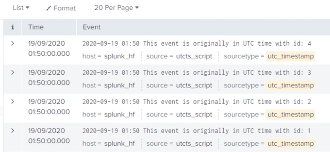
-
Timestamp format:
%d%b-%Y:%H:%M:%S -
Timestamp prefix
\
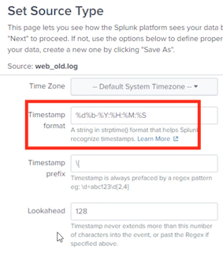
"local/props.conf"
[utc_timestamp]
TZ = UTC
root@splunk_hf:/opt/splunk/etc/apps/psdemo# vi local/props.conf
root@splunk_hf:/opt/splunk/etc/apps/psdemo# /opt/splunk/bin/splunk restart
index=main sourcetype=utc_timestamp
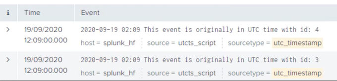
3-3 Demo: Using Splunk Web for Timestamp Recognition and Extraction
Configure timestamp through Splunk Web
- Events with non-standard timestamp
- Very old events
- Timestamp prefix value
- Timestamp recognition & line breaking
- Stanza in props.conf
root@splunk_hf:~# cd /opt/splunk/etc/apps/psdemo/
root@splunk_hf:/opt/splunk/etc/apps/psdemo# vi data/web_old.log
61.130.186.27 -- [30Mar-1998:14:03:13] "GET /cart.do?action=addtocart&itemId-HYD-29&JSESSIONID-CA9MO3AZIUSANA34656 HTTP 1.1" 503 694 "http://www.salesonline.com/category.screen?categoryId-BLUE_GIZMOS" "Mozilla/5.0 (Windows; U;
Windows NT 5.1; en-GB; rv:1.8.1.6) Gecko/20070725 Firefox/2.0.0.6" 444
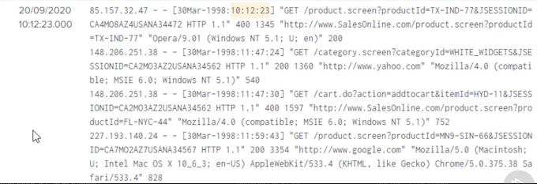
%d%b-%Y:%H:%M:%S
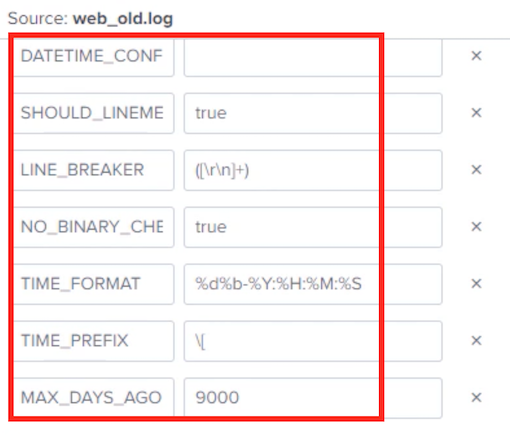
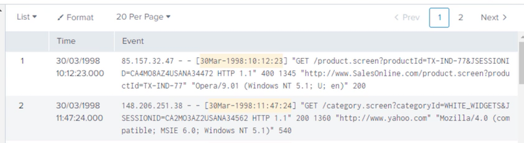
index=main sourcetype=old_weblogs
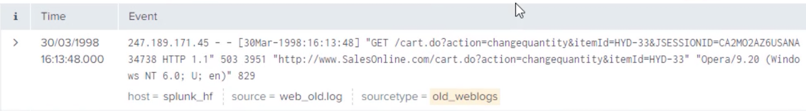
[utc_timestamp]
TZ = UTC
[old_weblogs]
DATETIME_CONFIG =
LINE_BREAKER = ([\r\n]+)
MAX_DAYS_AGO = 9000
NO_BINARY_CHECK = true
TIME_FORMAT = %d%b-%Y:%H:%M:%S
TIME_PREFIX = \[
category = Custom
description = Very old web server logs with weird date format
pulldown_type = true
3-4 Demo: Overriding Timestamps
Overriding event timestamp
- Events with multiple timestamps
- Custom timestamp
- Configuration in
props.conf
root@splunk_hf:/opt/splunk/etc/apps/psdemo# vi bin/timestampoverride.py
import datetime, time
for i in range(0,5):
print (datetime.datetime.now().strftime("%d/%m/%Y %H:%M:%S") + ". is the timestamp on this event number: "
str(i) + ". But I want timestamp=" + (datetime.datetime.now()- datetime.timedelta(minutes=90)).strftime("%Y, %B %d at %H:%M:%S"))
time.sleep(5)
root@splunk_hf:/opt/splunk/etc/apps/psdemo# /opt/splunk/bin/splunk cmd pythonbin/timestampOverride.py
20/09/2020 17:38:45 is the timestamp on this event number: O. But I want timestamp=2020. September 20 at 16:08:45
20/09/2020 17:38:50 is the timestamp on this event number: 1. But I want timestamp=2020. September 20 at 16:08:50
index=main sourcetype=timestamp_override
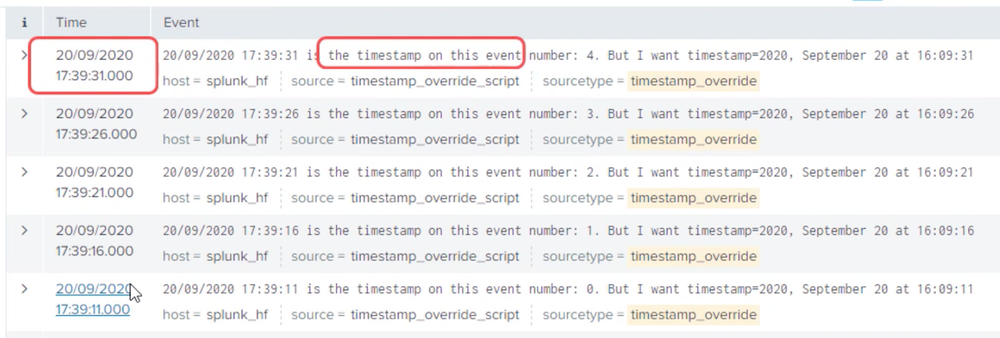
"local/props.conf"
[utc_timestamp]
TZ = UTC
[old _weblogs]
DATETIME_CONFIG=
LINE_BREAKER = ([\r\n]+)
MAX_DAYS_AGO = 9000
NO_BINARY_CHECK = true
TIME FORMAT = %d%b-%Y:%H:%M:%S
TIME_PREFIX = \[
category = Custom
description = Very old web server logs with weird date format
pulldown_type = true
[timestamp_override]
TIME_PREFIX = timestamp=
TIME_FORMAT = %Y, %B %d at %H:%M:%S
MAX_TIMESTAMP_LOOKAHEAD = 200
DATETIME_CONFIG=
root@splunk_hf:/opt/splunk/etc/apps/psdemo#/opt/splunk/bin/splunk restart
index=main sourcetype=timestamp_override
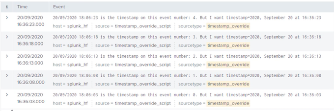
- Timestamp recognition in Splunk
- Timestamp attributes
- Translating time-zones
- Using Splunk web for timestamp handling
- Overriding timestamp
4 Overriding Default Fields and Custom Fields Extraction
- Defaults fields in Splunk Enterprise
- Process of overriding default fields
- Demo: Overriding default fields
- Index-time field extraction
- Demo: Custom fields extraction
4-1 Overriding Default Fields
Default Fields
- Tagged and added automatically to event data at index time
- Each default field holds information about the data it is tagged to
- Three types of default fields: Internal, basic and datetime
- Overridden when default behavior needs to be changed
-
Change does not apply to previously indexed events
-
Internal
_raw,_time,_indextime,_cd
Default Field Override – Scenarios
Default fields that we often need to override
- host
- source
- sourcetype
Some examples:
- Host is replaced when events originate from log server and host value exists in the event
- Source is overridden when file name is replaced with more suitable text
- Sourcetype is changed based on existence of some text or specific pattern in the event
Overriding Default Fields at Input Creation Time
- Through Splunk Web
- In configuration files
- Provide values for relevant attribute
- host
- source
- sourcetype
- index
datetime
date_hour,date_minute,date_year,date_zone,date_mday,date_month,date_second,date_wday
Splunk Enterprise Administration: Monitoring and Creating Inputs
Overriding Default Fields in Existing Inputs
- Define suitable value to assign
- Static value
- Regular expression
- Identify events to apply change
- Regex based
- Write stanzas in configuration files
- transforms.conf
- props.conf
- Restart Splunk
Overriding “host” Field
Configuration to override the host field
transforms.conf
[my_field_override_stanza_name]
REGEX = \w+\s\d+\s\d+:\d+:\d+\s(router\d+)\s
FORMAT = host::$1
DEST_KEY = MetaData:Host
Apr 11 10:32:22 router1 mgd[3606]: UI_DBASE_LOGOUT_EVENT: User ‘smith' exiting configuration mode
Apr 11 11:36:15 switch2 mgd[3606]: UI_COMMIT: User 'root' performed commit: no comment
Apr 11 11:46:37 router5 mib2d[2905]: SNMP_TRAP_LINK_DOWN: ifIndex 82, ifAdminStatus up(1), ifOperStatus
down(2), ifName at-1/0/0
Overriding “host” Field
Configuration to override the host field
props.conf
[mysourcetype|source::my_source|host::my_host]
TRANSFORMS-override_host = my_field_override_stanza_name
Apr 11 10:32:22 router1 mgd[3606]: UI_DBASE_LOGOUT_EVENT: User ‘smith' exiting configuration mode
Apr 11 11:36:15 switch2 mgd[3606]: UI_COMMIT: User 'root' performed commit: no comment
Apr 11 11:46:37 router5 mib2d[2905]: SNMP_TRAP_LINK_DOWN: ifIndex 82, ifAdminStatus up(1), ifOperStatus
down(2), ifName at-1/0/0
host = router1host = old_valuehost = router5
4-2 Overriding Sourcetype
- Use-case scenario
- Creating regular expression
- Setting up configuration files
- Testing Results
Overriding Sourcetype: Use-Case Scenario
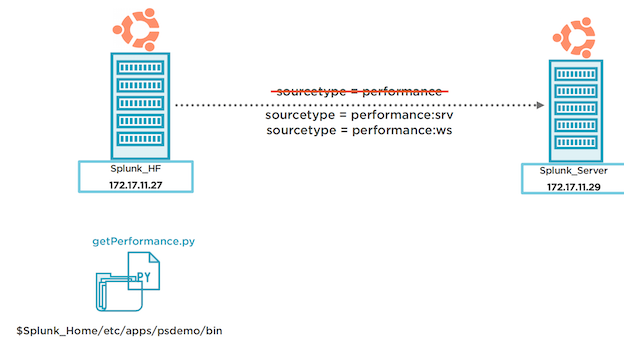
root@splunk_hf:/opt/splunk/etc/apps/psdemo/default# /opt/splunk/bin/python ../bin/getPerformance.py
2020-07-08 11:57:33 src=srv_pssepm01, cpu=59, ram=81, disk=37
2020-07-08 11:57:33 src=srv_psmai101, cpu=56, ram=85, disk=32
2020-07-08 11:57:33 sr=srv_psmailo2, cpu=58, ram=82, disk=35
2020-07-08 11:57:33 src=srv_psdc01, cpu=80, ram=82, disk=37
2020-07-08 11:57:33 sc=srv_psdhcp01, cpu=79, ram=93, disk=32
index=main source=perfmon_script
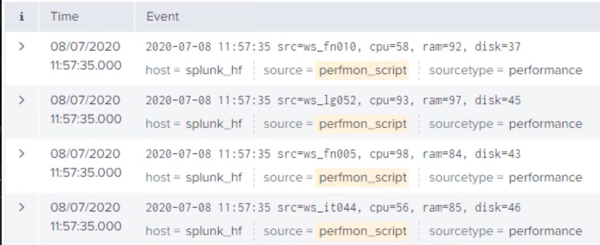
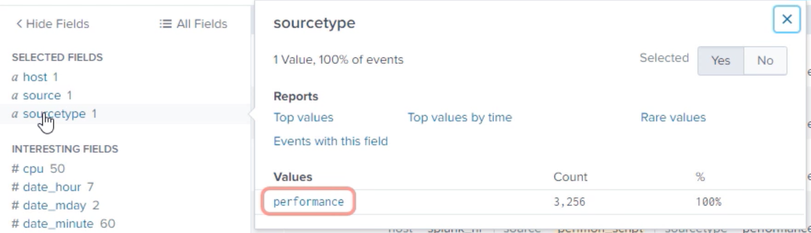
sourcetype=performance:srvsourcetype=performance:ws
root@splunk_hf:/opt/splunk/etc/apps/psdemo/default# cd ../local
transforms.conf
[source::perfmon_script]
TRANSFORMS-changesourcetype = performance_sourcetype_override
props.conf
[performance_sourcetype_override]
REGEX = src\=(ws|srv)\_
FORMAT = sourcetype::performance:$1
DEST_KEY = MetaData:Sourcetype
root@splunk_hf:/opt/splunk/etc/apps/psdemo/local#/opt/splunk/bin/./splunk restart
index=main source=perfmon_script
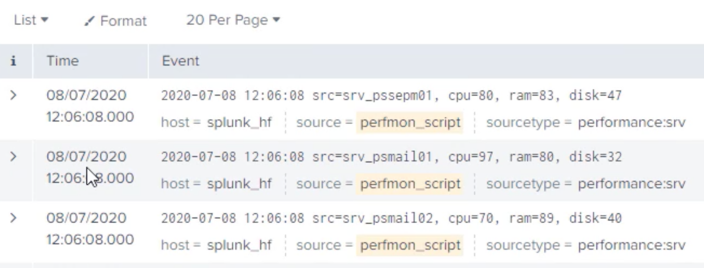
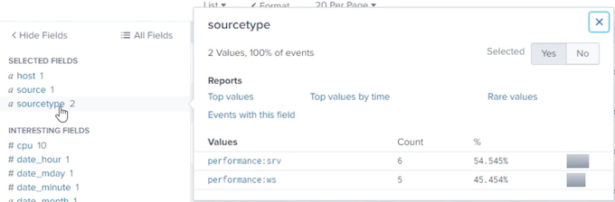
4-3 Creating Custom Fields at Index-time
Index-time Field Extractions
- Fields extracted and written to metadata
- Similar to default fields overriding process
- transforms.conf
- props.conf
- fields.conf
- Restart Splunk after changes
transforms.conf
REGEX = <suitable regular exp>
FORMAT = <key>::<val>
WRITE_META = true
- Changes to transforms.conf
- Regular expression that identifies events to apply changes as well as captures groups to assign values to extracted fields
key1::$1key2::“some string”$2::$3- Default value is
<stanza_name>::$1 - Not required if you are using namecapturing groups for example:
(?<_KEY_1>[^\=]*)\=(?<_VAL_1>[^\,]*)\, _KEY_<string> & _VAL_<string>is special capturing group- Only valid for index time extractions. It writes REGEX to metadata automatically. Default value is false
- Default value is
DEFAULT_VALUE = <value>
SOURCE_KEY = <key>
REPEAT_MATCH = true|false
LOOKAHEAD = <integer>
- What would be the default value if regex fails?
- The key to which the value of the regex would apply to. It should be present at the time of this extraction.
Default is
_raw. - Regex is applied multiple times to
SOURCE_KEYafter finding first match - How far to look ahead in an event for the regex match. Default 4096
props.conf
TRANSFORMS-<name> = <stanza_name>
Reference the transform created previously from props.conf using TRANSFORMS- keyword for index
time extractions.
You’ll use EXTRACT- in the case of search time extractions
fields.conf
[field_name]
INDEXED = true
- Reference the transform created previously from props.conf
- Tells Splunk to extract and store the field in metadata at index time.
- If not set to true, the field will not be extracted at index time.
- Default is false. Check for index & search time extraction conflicts
4-4 Demo: Creating Custom Fields at Index-time
- Identifying custom fields
- Changes in configuration files
- Check results in Spunk Enterprise
index=main sourcetype=netflow
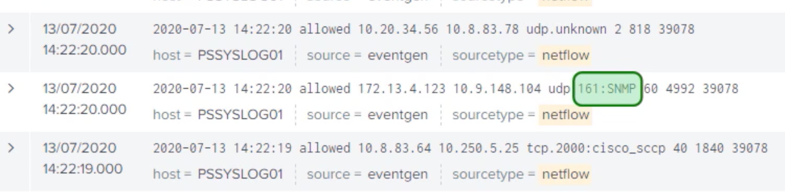
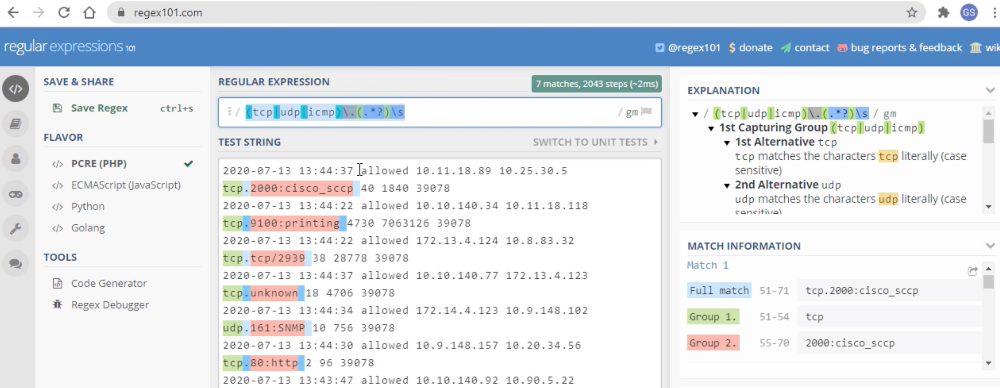
root@spunk_hf:~# cd /opt/splunk/etc/apps/psdemo/local/
root@splunk_hf:/opt/splunk/etc/apps/psdemo/local# vi transforms.conf
[performance_sourcetype_override]
REGEX = src\=(ws|srv)\
FORMAT = sourcetype::performance:$1
DEST_KEY = MetaData:Sourcetype
[netflow_custom_fields]
REGEX = (tcpludp|icmp)\.(.*?)\s
FORMAT = protocol::$1 protocol_detail::$2
WRITE_META = true
props.conf
[source: :perfmon_script]
TRANSFORMS-changesourcetype = performance_sourcetype_override
[netflow]
TRANSFORMS-netflow = netflow_custom_fields
fields.conf
[protocoll
INDEXED=true
[protocol_detail]
root@splunk_hf:/opt/splunk/etc/apps/psdemo/local# /opt/splunk/bin/./splunk restart
index=main sourcetype=netflow
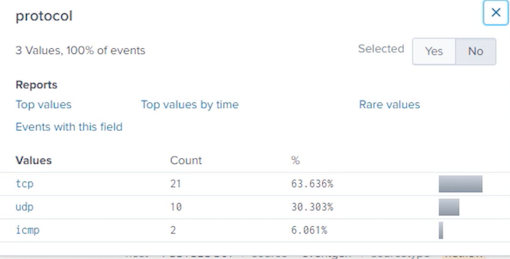
- Default fields in Splunk Enterprise
- Overriding default fields – why and how
- Demo: Overriding default fields
- Index time extractions – why and how
- Demo: Extracting custom fields
5 Routing and Filtering Events
- Routing event data
- Route all or specific events
- Indexer groups
- Default routing
- Filtering events
- Filtering queues
- Filtering in/out events
- Demo: Routing and filtering events
5-1 Routing Event Data
- Based on host, source, source type or a pattern in events
- Pattern based routing can only be done on a full Splunk instance
- Universal Forwarders route data based on host, source or sourcetype
- Can forward to multiple target indexer groups
- Can be routed to third party systems
Routing Event Data
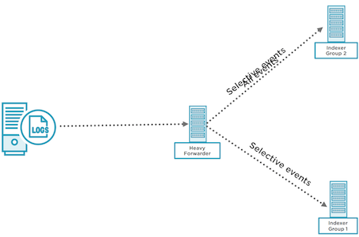
index=main source=WinEventLog:Security
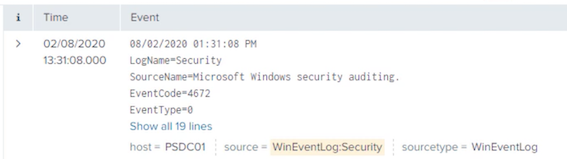
Configuring Event Routing
A sample stanza that routes events to target groups.
transforms.conf
[myRoutingStanza]
REGEX = action=\"blocked\" OR .
DEST_KEY = _TCP_ROUTING|_SYSLOG_ROUTING
FORMAT = indexerGroup1,indexerGroup2
- A regular expression that captures all the events to be routed. (.) or just a '.' refers to all events.By default all events routed to default indexer
DEST_KEYattribute tells Splunk what we need to do with the event captured in the previous step- FORMAT attribute will hold the values of indexer group or groups where these events will be routed
props.conf
[sourcetype|source|host]
TRANSFORMS-routing = stanza1, stanza2
- Reference thestanza created in transfroms.conf from props.conf
outputs.conf
[tcpout:myFirstIndexerGroup]
server = 172.1.1.10:9997,172.1.1.11:9997
[tcpout:mySecondIndexerGroup]
server = indexer3:9997,indexer4:9997
[tcpout]
defaultGroup = myFirstIndexerGroup
- Groups are defined with suitable names and list of server ip/dns name:port
- Default group is selected
5-2 Demo: Routing Event Data
- Part I
- Identify subset of event to rout
- Understanding current topology
- Route the subset of events
- Part II
- Route same events to multiple indexers
- Overriding default indexer group
Overriding Sourcetype: Use-Case Scenario
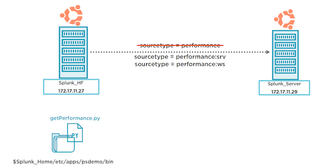
Routing Events
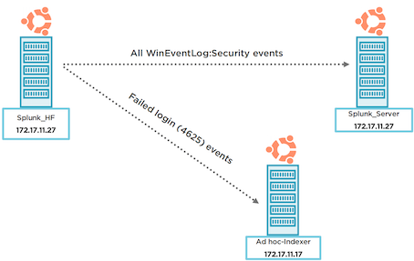
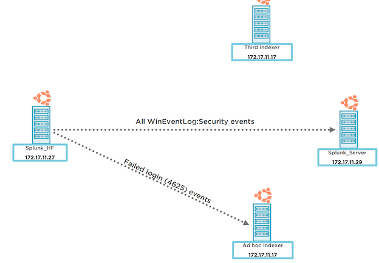
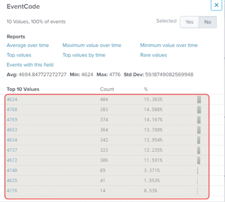
index=main source=WinEventLog:Security EventCode=4625
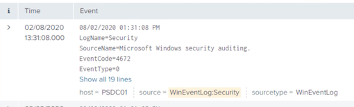
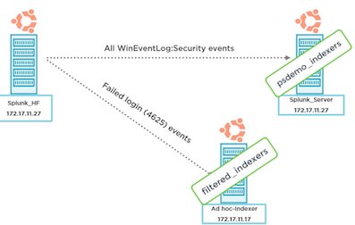
root@splunk_hf:/# cd /opt/splunk/bin/
root@splunk_hf:/opt/splunk/bin# ./splunk list forward-server
Active forwards:
172.17.11.29:9997
Configured but inactive forwards:
None
root@splunk_hf:/opt/splunk/bin# cd ../etc/system/local/
root@splunkhf:/opt/splunk/etc/system/local# vi outputs.conf
[tcpout]
defaultGroup=psdemo_indexers
[tcpout:psdemo_indexers]
server=172.17.11.29:9997
[tcpout:filtered_indexers]
server=172.17.11.17:9997
root@splunk_hf:/opt/splunk/etc/system/local# /opt/splunk/bin/./splunk restart
root@splunk_hf:/opt/splunk/etc/system/local# /opt/splunk/bin/./splunk list forward-server
Active forwards:
172.17.11.17:9997
172.17.11.29:9997
Configured but inactive forwards:
None
root@splunk_hf:/opt/splunk/etc/apps/psdemo/local#
vi transforms.conf
[loginFailedRouting]
REGEX = EventCode= 4625
DEST_KEY = _TCP_ROUTING
FORMAT = filtered_indexer
vi props.conf
[source::WinEventLog:Security]
TRANSFORMS-routing=loginFailedRouting
root@splunk_hf:/opt/splunk/etc/apps/psdemo/local# /opt/splunk/bin/./splunk restart
index=main source=WinEventLog:Security EventCode=4625
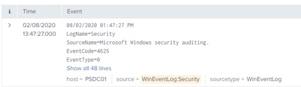
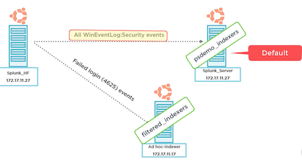
vi transforms.conf
[loginFailedRouting]
REGEX = EventCode=4625
DEST_KEY = _TCP_ROUTING
FORMAT = filtered_indexers, psdemo_indexers
root@splunk_hf:/opt/splunk/etc/apps/psdemo/local# /opt/splunk/bin/./splunk restart
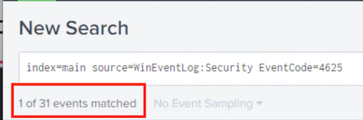
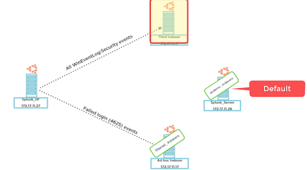
root@splunk_hf:/opt/splunk/etc/apps/psdemo/local# vi transforms.conf
[allWinSecurityEventsRouting]
REGEX = (.)
DEST_KEY = _TCP_ROUTING
FORMAT = psdemo_indexers
[loginFailedRouting]
REGEX = EventCode=4625
DEST_KEY = _TCP_ROUTING
FORMAT = filtered_indexers, psdemo_indexers
props.conf
[source::WinEventLog:Security]
TRANSFORMS-routing=allWinSecurityEventsRouting,loginFailedRouting
root@splunk_hf:/opt/splunk/etc/apps/psdemo/local#/opt/splunk/bin/./splunk restart
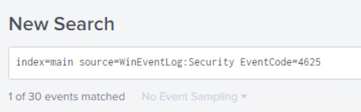
6 Manipulating Raw Data
- Anonymize, mask or modify event data
- SEDCMD
- Configuration and working
- Demo
- Regex transform
- Configuration and working
- Demo
6-1 Manipulating Raw Data in Splunk Enterprise
Manipulating Raw Data in Splunk
- Anonymize, mask or delete sensitive or unwanted information
- Configure heavy forwarders or indexers to manipulate arriving data
- Splunk cloud customers use a heavy forwarder
- Two methods: SEDCMD like sed script or regex transform
- Use stanza based on host, source, sourcetype to select events
6-2 Manipulating Events Using SEDCMD
SEDCMD
- Configured through props.conf
-
Anonymize with sed script
SEDCMD-<class>s/<regex>/<replace>/flagsflags: g – global or a numberApplied to _raw only
-
Replace characters with sed script
SEDCMD-<class> = y/<string1>/string2/y/abc/ABC/
6-3 Demo: Manipulating Events Using SEDCMD
- Part I
- Masking data using SEDCMD script
- 1234-4567-7890-0123
- XXXX-XXXX-XXXX-0123
- Part II
- Replacing data with SEDCMD script
- +61 412 234 456
- (+61) (412 234 456)
index=main source=WineventLog:Security
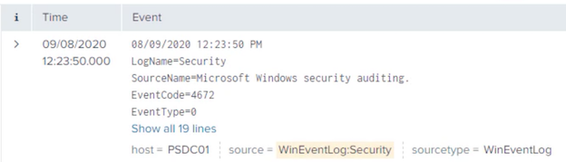

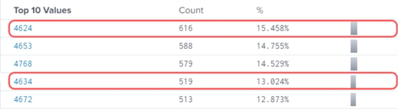
root@splunk_hf:~# cd /opt/splunk/etc/apps/psdemo/local/
root@splunk_hf:/opt/splunk/etc/apps/psdemo/local# ll
fields.conf
props.conf
transforms.conf
transforms.conf
[allwinSecurityEventsRouting]
REGEX = (.)
DEST_KEY = _TCP_ROUTING
FORMAT = psdemo_indexers
[loginFailedRouting]
REGEX = EventCode=4625
DEST_KEY = _TCP_ROUTING
FORMAT = filtered_indexers, psdemo_indexers
[setNul1]
REGEX = EventCode=(4624|4634)
DEST_KEY = queue
FORMAT = nullQueue
props.conf
[source::WinEventLog:Security]
TRANSFORMS-routing = allwinSecurityEventsRouting, loginFailedRouting
TRANSFORMS-null = setNull
root@splunk_hf:/opt/splunk/etc/apps/psdemo/local# /opt/splunk/bin/./splunk restart
index=main source=WineventLog:Security
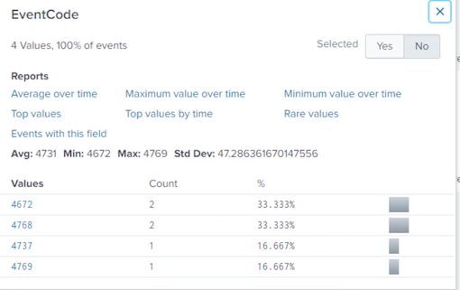
Filtering and Routing Events
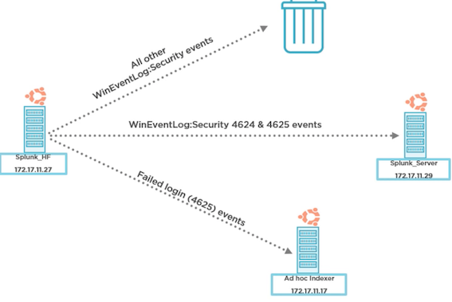
transforms.conf
[allwinSecurityEventsRouting]
REGEX = (.)
DEST_KEY = _TCP_ROUTING
FORMAT = psdemo_indexers
[loginFailedRouting]
REGEX = EventCode=4625
DEST_KEY = _TCP_ROUTING
FORMAT = filtered_indexers, psdemo_indexers
[setNul1]
REGEX = .
DEST_KEY = queue
FORMAT = nul1Queue
[setParsing]
REGEX = EventCode=(4624|4625)
DEST_KEY = queue
FORMAT = indexOueue
props.conf
[source::WinEventLog:Security]
TRANSFORMS-routing =allwinSecurityEventsRouting,loginFailedRouting
TRANSFORMS-null = setNu1l,setParsing
/opt/splunk/bin/./splunk restart
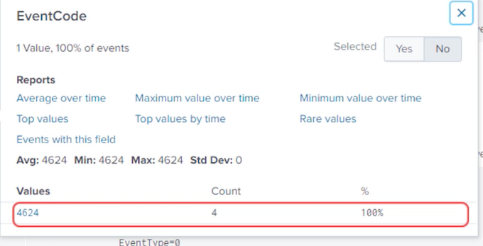
index=main source=WineventLog:Security
root@splunk_hf:~# cd /opt/splunk/etc/apps/psdemo/
root@splunk_hf:/opt/splunk/etc/apps/psdemo# vi default/inputs.conf
"bin/custGen.py"
import random
from datetime import datetime
def getCreditCardNum():
creditCardNum=str(random.randint(2222,9999))
for _ in range(3):
creditCardNum += "-" + str(random. randint(2222,9999))
return creditCardNum
def getMobileNum():
mobileNum = "+61 42"+str(random.randint(0,9))
for _ in range(2):
mobileNum += " "+ str (random.randint(111.999))
return mobileNum
def getTimeStamp() :
return datetime.now().strftime("%Y-%m-%d%H:%M:%S")
firstNames = [""]
lastNames = [""]
for firstName in firstNames:
record = getTimeStamp() + ' CustomerName=" ' + firstName + ' ' +random.choice(lastNames)+'", ' + 'CreditCard=" '+getCreditCardNum()+" ， MobileNumber="'+getMobileNum() + '"'
print (record)
index=main sourcetype=customers
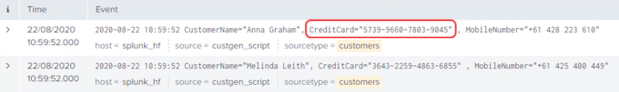
root@splunk_hf:/opt/splunk/etc/apps/psdemo# vi local/props.conf
[customers]
SEDCMD-cc = S/(1d{4})\-){33}/XXXX-XXXX-XXXX-/g
root@splunk_hf:/opt/splunk/etc/apps/psdemo# /opt/splunk/bin/./splunk restart
index=main sourcetype=customers
root@splunk_hf:/opt/splunk/etc/apps/psdemo# vi local/props.conf
[customers]
SEDCMD-CC = S/(\d{4}\-) {3}/XXXX-XXXX-XXXX-/g
SEDCMD-mn = s/MobileNumber\=\"(\+61)\s([^\"]*)/MobileNumber="0\2/g
vi local/props.conf
root@splunk_hf:/opt/splunk/etc/apps/psdemo# /opt/splunk/bin/./splunk restart
index=main sourcetype=customers
[customers]
SEDCMD-cust = S/(\d{4}\-) {3}/XXXX-XXXX-XXXX-/g s/MobileNumber\=\"(\+61)\s([^\"]*)/MobileNumber="0\2/g
6-4 Manipulating Events Using Regex Transform
REGEX Transform
- Configured through props and transforms
-
transforms.conf
- REGEX – a PERC regex
- FORMAT – arrange event post change
DEST_KEY– applied to field e. g raw
-
props.conf
TRANSFORM-<class>- Comma separated list of transforms
6-5 Demo: Manipulating Events Using Regex Transform
Anonymizing data with regex transform
- Masking credit card number
- 1234-4567-7890-0123
- XXXX-XXXX-XXXX-0123
- Creating a suitable regex
- Configuring transforms and props.conf
- Verifying results
props. conf
[customers]
SEDCMD-cust = S/(\d{4}\-) {3}/XXXX-XXXX-XXXX-/g s/MobileNumber\=\"(\+61)\s([^\"]*)/MobileNumber="0\2/g
index=main sourcetype=customers
regex101.com
root@splunk_hf:~# cd /opt/splunk/etc/apps/psdemo/local/
root@splunk_hf:/opt/splunk/etc/apps/psdemo/local# vi transforms.conf
[maskcc]
REGEX = ^(.*)CreditCard\=\"(\d+\-){3}(.*)$
FORMAT = $1CreditCard- "XXXX-XXXX-XXXX-$3"
_DEST_KEY = _raw
props.conf
[customers]
TRANSFORMS-maskcreditcard = maskCC
index=main sourcetype=customers